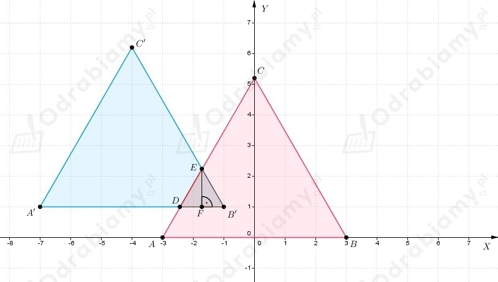

a)
Wiemy, że okrąg jest styczny jednocześnie do prostych
oraz jego środek leży na prostej y=-x.
Zapisujemy równania prostych stycznych do okręgu w postaci ogólnej
Promień okręgu, to odległość środka okręgu od punktu styczności z prostą.
Skoro środek okręgu leży na prostej y=-x, to
Zatem korzystając ze wzoru na odległość punktu od prostej dostajemy
Zatem dostajemy
Wyznaczamy długość promienia okręgu
Równanie okręgu
b)
Wiemy, że okrąg jest styczny jednocześnie do prostych
oraz jego środek leży na prostej y=-x.
Zapisujemy równania prostych stycznych do okręgu w postaci ogólnej
Promień okręgu, to odległość środka okręgu od punktu styczności z prostą.
Skoro środek okręgu leży na prostej y=-x, to
Zatem korzystając ze wzoru na odległość punktu od prostej dostajemy
Zatem dostajemy
Wyznaczamy długość promienia okręgu
Równanie okręgu
Wiemy, że w okrąg
został wpisany trójkąt równoramienny.
a)
Podstawa trójkąta jest zawarta w prostej y=x-7.
Skoro trójkąt równoramienny jest wpisany w okrąg, to dwa wierzchołki trójkąta są
punktami przecięcia prostej y=x-7 z okręgiem, zatem rozwiązujemy układ równań
Zatem
Wnioskujemy, że dwa wierzchołki trójkąta, to punkty
Trzeci wierzchołek trójkąta leży na prostej prostopadłej do prostej y=x-7 i przechodzącej
przez środek odcinka AB.
Wyznaczamy środek odcinka AB
Prosta prostopadła do prostej y=x-7 ma współczynnik kierunkowy równy (-1), zatem
Wobec tego prosta na której leży trzeci wierzchołek trójkąta ma równanie
Wyznaczamy współrzędne tego wierzchołka za pomocą układu równań
Zatem
Dostajemy, że
b)
Jedno z ramion trójkąta jest zawarte w prostej
Punkty przecięcia prostej z okręgiem są dwom wierzchołkami trójkąta równoramiennego.
zatem
Dwa wierzchołki trójkąta mają współrzędne
Wyznaczamy współczynniki kierunkowe prostych, w których zawarte są wysokości trójkąta, czyli
Rozważamy pierwszy przypadek
Prosta zawierająca podstawę trójkąta jest prostopadła do prostej CS i przechodzi
przez punkt A, wobec tego
Wyznaczamy współrzędne trzeciego wierzchołka trójkąta za pomocą układu równań
zatem
Wnioskujemy, że
Rozważamy drugi przypadek
Prosta zawierająca podstawę trójkąta jest prostopadła do prostej AS i przechodzi
przez punkt C, wobec tego
Wyznaczamy współrzędne trzeciego wierzchołka trójkąta za pomocą układu równań
Wobec tego wnioskujemy, że
Wiemy, że bok AB trójkąta ABC zawiera się w prostej x+y-2=0, a bok AC - w prostej 3x-5y-14=0.
Punkt
jest środkiem boku BC.
Wyznaczamy współrzędne wierzchołków tego trójkąta.
Wierzchołek A jest punktem przecięcia prostej x+y-2=0 i 3x-5y-14=0, zatem
zatem
Dostajemy
Zapisujemy równania prostych w postaci kierunkowej
Możemy zapisać, że
Skoro punkt S jest środkiem odcinka BC, to
wobec tego
czyli
Natomiast
Wierzchołki trójkąta, to punkty
Wyznaczamy długości boków trójkąta
Zauważamy, że
Zatem na mocy twierdzenia odwrotnego do twierdzenia Pitagorasa wnioskujemy, że trójkąt
ABC jest trójkątem prostokątnym.
Wobec tego środek okręgu opisanego na tym trójkącie, to środek odcinka, który jest przeciwprostokątną
trójkąta ABC, czyli odcinka AC.
Wyznaczamy środek okręgu jako środek odcinka AC.
Promień okręgu opisanego na trójkącie ABC, to odcinek KA, więc wyznaczamy jego długość
Zatem równanie okręgu przyjmuje postać
Wiemy, że P(0, -3).
Wyznaczamy równanie prostej do której należą punkty wspólne okręgów
Zatem na początek wyznaczamy punkty przecięcia okręgów rozwiązując układ równań
Dostajemy
Zatem powracamy do pierwszego równania i otrzymujemy
wobec tego
Wnioskujemy, że punkty wspólne okręgów, to punkty
Wyznaczamy równanie prostej przechodzącej przez punkty A i B.
Podstawiamy współrzędne punktu B i dostajemy
Zatem
Wyznaczamy odległość punktu P od prostej y=x.
Zapisujemy równanie prostej w postaci ogólnej
Zapisujemy równania okręgów w postaci kanonicznej
Odczytujemy, że
Zauważamy, że
zatem skala jednokładności k=1.
Wobec tego okrąg O1 jest obrazem okręgu O2 w symetrii środkowej względem punktu S, który jest środkiem
symetrii odcinka S1S2, czyli
Przekształcamy równanie okręgu do postaci kanonicznej
a)
Okrąg symetryczny do okręgu O1 względem osi OX ma środek w punkcie
oraz promień długości 4.
Zatem
b)
Okrąg symetryczny do okręgu O1 względem osi OY ma środek w punkcie
oraz promień długości 4.
Zatem
c)
Niech
będzie prostą przechodząca przez punkt S1(-3, 2) oraz
Zatem
Do równania prostej m podstawiamy współrzędne punktu S1 i otrzymujemy
Niech P będzie punktem przecięcia prostych l i m. Jego współrzędne spełniają układ równań
Zatem P(1, -2).
Punkt P jest środkiem odcinka S1S2, gdzie S2(e, f) jest środkiem okręgu O2.
Zatem korzystając z definicji środka odcinka dostajemy
Dostajemy, że S2(5, -6), natomiast promień okręgu nie zmienia się.
Zatem równanie okręgu symetrycznego do okręgu O1
względem prostej l możemy zapisać następująco
d)
Niech
będzie prostą przechodząca przez punkt S1(-3, 2) oraz
Zatem
Do równania prostej m podstawiamy współrzędne punktu S1 i otrzymujemy
Niech P będzie punktem przecięcia prostych l i m. Jego współrzędne spełniają układ równań
Zatem P(1, 4).
Punkt P jest środkiem odcinka S1S2, gdzie S2(e, f) jest środkiem okręgu O2.
Zatem korzystając z definicji środka odcinka dostajemy
Dostajemy, że S2(5, 6), natomiast promień okręgu nie zmienia się.
Zatem równanie okręgu symetrycznego do okręgu O1
względem prostej l możemy zapisać następująco
a)
Przekształcamy równanie okręgu do postaci kanonicznej
Z treści zadania wiemy, że styczne są prostopadłe do prostej 3x-y=0.
Przekształcamy równanie prostej do postaci kierunkowej
Zatem współczynnik kierunkowy prostych stycznych, to a=-1/3.
Równania stycznych możemy zapisać w postaci
Zapiszmy równanie stycznej w postaci ogólnej
Pamiętamy, że odległość środka okręgu od stycznej jest równa promieniowi okręgu, więc
Równania stycznych:
b)
Równanie okręgu możemy zapisać jako
Styczne do tego okręgu przechodzą przez punkt A(3, -4), zatem
Więc proste styczne do okręgu przechodzące przez punkt A mają równanie postaci
Styczne są oddalone od środka okręgu o √5
zatem
Wobec tego równania stycznych:
Niech P(x, 2x-10) będzie punktem styczności prostej l z okręgiem, zatem
Niech Q(x, -2x+2) będzie punktem styczności prostej k z okręgiem, zatem
Punkty styczności to
Zatem
Aby okrąg był styczny do prostej, to długość jego promienia musi być równa
odległości środka okręgu od prostej.
Zapisujemy równanie okręgu w postaci kanonicznej
Założenie
zatem
Prosta do której okrąg jest styczny
Dla m=4 okrąg jest styczny do prostej.
a)
Zatem współrzędne wierzchołków trójkąta A'B'C', który jest obrazem
trójkąta ABC w przesunięciu o podany wektor, to
więc
Zobrazujmy trójkąty w układzie współrzędnych
Część wspólna trójkątów, to trójkąt DB'E.
Podstawą tego trójkąta jest odcinek DB, natomiast wysokością odcinek EF.
Wyznaczamy współrzędne punktu E jako punktu przecięcia prostych AC i B'C'.
Równanie prostej AC
Podstawiamy współrzędne punktu A do równania
i dostajemy
zatem
Równanie prostej B'C'.
Podstawiamy współrzędne punktu B' do równania
i dostajemy
Wyznaczamy drugą współrzędną punktu E.
Zatem
b)
Zatem współrzędne wierzchołków trójkąta A'B'C', który jest obrazem
trójkąta ABC w przesunięciu o podany wektor, to
więc
Zobrazujmy trójkąty w układzie współrzędnych

Część wspólna trójkątów, to trójkąt DB'E.
Zauważamy, że
zatem trójkąt ABC jest równoboczny.
Więc również trójkąt DB'E jest równoboczny.
Równanie prostej AC
Podstawiamy współrzędne punktu A do równania
i dostajemy
zatem
Zapisujemy równanie prostej w postaci ogólnej
Wyznaczamy wysokości trójkąta DB'E jako odległość punktu B' od prostej AC.
Wyznaczamy długość boku trójkąta DB'E
Punkt P jest środkiem boku AB trójkąta ABC, natomiast punkt Q jest środkiem boku AC tego trójkąta.
Należy wyznaczyć równanie prostej zawierającej bok AC.
a)
Wiemy, że
Niech
Dostajemy, że
Niech
Dostajemy, że
Wyznaczamy równanie prostej przechodzącej przez punkty A i C.
Podstawiamy współrzędne punktu C do równania
i dostajemy
b)
Wiemy, że
Niech
Dostajemy, że
Niech
Dostajemy, że
Niech
Dostajemy, że
Wyznaczamy równanie prostej przechodzącej przez punkty A i C.
Podstawiamy współrzędne punktu C do równania
i dostajemy